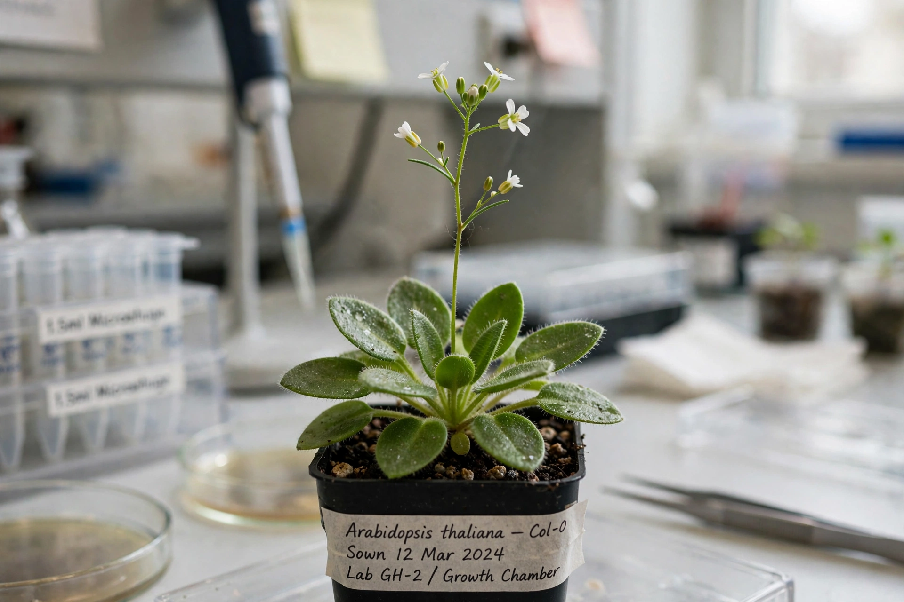

From Wikipedia, the free encyclopedia
| Arabidopsis thaliana | |
|---|---|
 | |
| Kingdom | Plantae |
| Order | Brassicales |
| Family | Brassicaceae |
| Genus | Arabidopsis |
| Species | A. thaliana (L.) Heynh. |
| Common names | Thale cress, mouse-ear cress |
Arabidopsis thaliana, the Arabidopsis, thale cress, mouse-ear cress or simply Arabidopsis, is a small plant from the mustard family (Brassicaceae), native to Eurasia and Africa, now naturalised worldwide. It is a popular model organism in plant biology and genetics: although of little agricultural significance, its small genome, rapid life cycle of about six weeks from seed to seed, and ease of genetic transformation make it an ideal laboratory plant.
Arabidopsis was the first plant to have its entire genome sequenced (in 2000). The genome is about 135 megabase pairs organised into five chromosomes, with roughly 27,000 genes. Extensive stock centres (such as ABRC and NASC) maintain mutant lines available to researchers.
The plant is used to study flower development (the ABC model of floral organ identity), photoreception and circadian rhythms, plant immunity, hormone signalling, and responses to drought and pathogens. Agrobacterium-mediated "floral dip" transformation allows easy creation of transgenic plants. Arabidopsis has even been grown aboard the International Space Station to study plant growth in microgravity.
It is a small annual rosette plant, 20–25 cm tall, with small white self-pollinating flowers and slender silique fruits containing many seeds. It grows readily on rock, sand, and disturbed ground, and as a common weed of paths and waste places.
Categories: Arabidopsis | Model organisms | Plants described in 1753